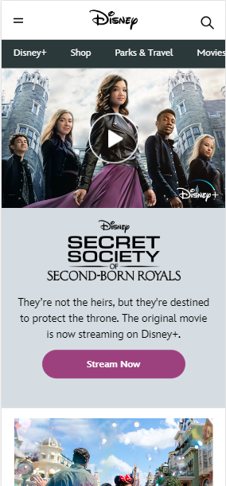
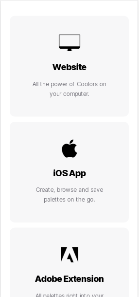
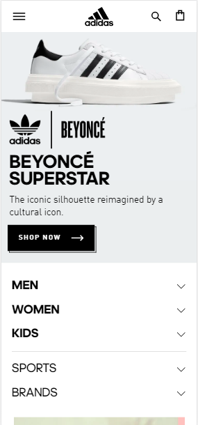

PARC: Contrast
Disney
I like how they use shades of puple and the black color to contrast with each other in this website. It may appear like a subtle contrast but it enhances the texts on there and highlights the stream buttons making it easy and appealing for users to hit them right away.
White Space and Clean Design
Coolors
If you scroll down their front page, you would see different options contained in boxes separated by sufficient amount of whitespace (i.e. Website, iOS App, Adobe Extentsion, etc.). Other than that, they used concise content that makes this website simple but sophisticated.
Hick's Law
Adidas Philippines
This website exemplifies Hick's Law because as we all know, this company offers a wide variety of products but they managed to categorize this to 3 major choices, namely, MEN, WOMEN, KIDS. With that on the front page and with larger, bolder texts than the others, users will not have a hard time choosing the right products for them.